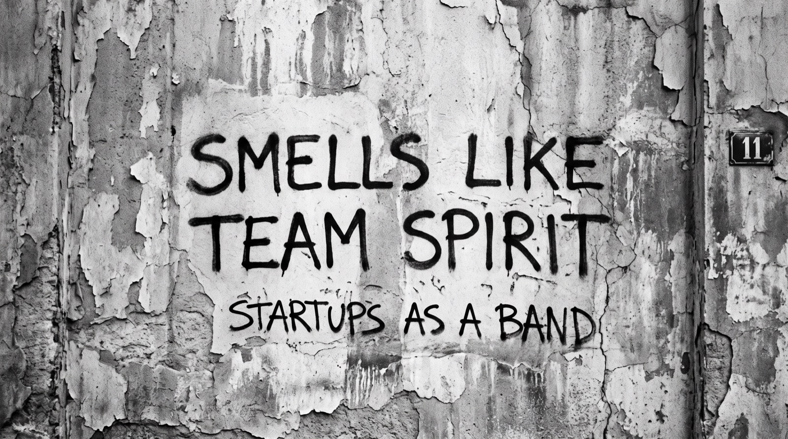

PMF Is Gonna Rock Ya!
How did Cursor spend years searching for the right product before becoming an AI coding sensation? How did fal turn a Python data science tool into a generative AI powerhouse? Through real stories from the PWV (Preston-Werner Ventures) portfolio, we'll explore product-market fit: how startups discover what customers actually want, why timing and finding the right buyer matter, and why even brilliant technology can struggle to find a market.

Smells Like Team Spirit: Startups as a Band
Every startup is a band. We'll look at what solo founders, duos, trios, and quartets each get right and wrong, why the person you pick for the launch may not be the person you want in the van for ten years, and why success doesn't end the pressure — after the raise, after PMF, it changes shape, and handling it is what keeps the band from breaking up. Expect practical questions, real stories, and a little chaos.